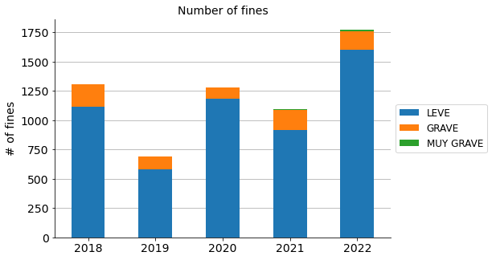
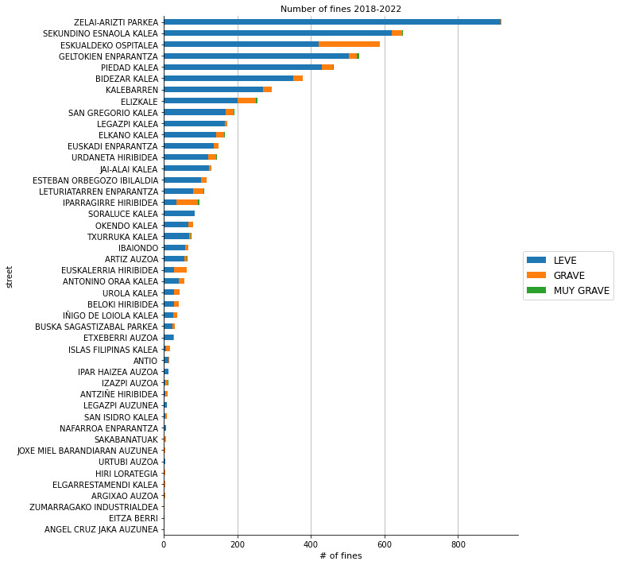
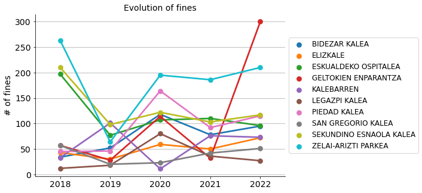

Traffic fines
Contents
Traffic fines#
https://www.gipuzkoairekia.eus/
# Import basic packages
import pandas as pd
import numpy as np
import matplotlib.pyplot as plt
import seaborn as sns
# Read the data
usecols=[0, 4, 5, 6, 7, 8] # Useful columns
fines_2018 = pd.read_csv("data/multas/multas_2018.csv", sep=";", decimal=",", usecols=usecols)
fines_2019 = pd.read_csv("data/multas/multas_2019.csv", sep=";", decimal=",", usecols=usecols)
fines_2020 = pd.read_csv("data/multas/multas_2020.csv", sep=";", decimal=",", usecols=usecols)
fines_2021 = pd.read_csv("data/multas/multas_2021.csv", sep=";", decimal=",", usecols=usecols)
fines_2022 = pd.read_csv("data/multas/multas_2022.csv", sep=";", decimal=",", usecols=usecols)
# Concatenate the data into a unique dataset
fines = pd.concat([fines_2018, fines_2019, fines_2020, fines_2021, fines_2022])
# Rename columns
fines = fines.rename(columns={"AÑO": "year",
"NOMBRE CALLE": "street",
"CALIFICACION": "category",
"NRO MULTAS": "fines",
"IMPORTE PAGADO": "paid",
"IMPORTE PENDIENTE DE PAGO EN EJECUTIVA": "unpaid"})
fines
| year | street | category | fines | paid | unpaid | |
|---|---|---|---|---|---|---|
| 0 | 2018 | NaN | LEVE | 2 | 15.0 | 0.00 |
| 1 | 2018 | GELTOKIEN ENPARANTZA | GRAVE | 3 | 0.0 | 234.95 |
| 2 | 2018 | GELTOKIEN ENPARANTZA | LEVE | 52 | 640.8 | 279.15 |
| 3 | 2018 | GELTOKIEN ENPARANTZA | MUY GRAVE | 2 | 500.0 | 0.00 |
| 4 | 2018 | EUSKADI ENPARANTZA | GRAVE | 4 | 200.0 | 244.95 |
| ... | ... | ... | ... | ... | ... | ... |
| 75 | 2022 | IBAIONDO | GRAVE | 2 | 200.0 | 0.00 |
| 76 | 2022 | IBAIONDO | LEVE | 45 | 385.0 | 259.65 |
| 77 | 2022 | ESKUALDEKO OSPITALEA | GRAVE | 34 | 2100.0 | 949.80 |
| 78 | 2022 | ESKUALDEKO OSPITALEA | LEVE | 62 | 675.0 | 533.55 |
| 79 | 2022 | ANTIO | LEVE | 1 | 0.0 | 0.00 |
340 rows × 6 columns
# See how it looks like
fines.info()
<class 'pandas.core.frame.DataFrame'>
Int64Index: 340 entries, 0 to 79
Data columns (total 6 columns):
# Column Non-Null Count Dtype
--- ------ -------------- -----
0 year 340 non-null int64
1 street 337 non-null object
2 category 340 non-null object
3 fines 340 non-null int64
4 paid 340 non-null float64
5 unpaid 340 non-null float64
dtypes: float64(2), int64(2), object(2)
memory usage: 18.6+ KB
# Rows with NaN values
fines[fines["street"].isna()]
| year | street | category | fines | paid | unpaid | |
|---|---|---|---|---|---|---|
| 0 | 2018 | NaN | LEVE | 2 | 15.0 | 0.0 |
| 0 | 2020 | NaN | MUY GRAVE | 2 | 120.0 | 0.0 |
| 0 | 2021 | NaN | MUY GRAVE | 1 | 0.0 | 0.0 |
# Discard rows with NaN values
fines = fines[~fines["street"].isna()]
fines.info()
<class 'pandas.core.frame.DataFrame'>
Int64Index: 337 entries, 1 to 79
Data columns (total 6 columns):
# Column Non-Null Count Dtype
--- ------ -------------- -----
0 year 337 non-null int64
1 street 337 non-null object
2 category 337 non-null object
3 fines 337 non-null int64
4 paid 337 non-null float64
5 unpaid 337 non-null float64
dtypes: float64(2), int64(2), object(2)
memory usage: 18.4+ KB
fines
| year | street | category | fines | paid | unpaid | |
|---|---|---|---|---|---|---|
| 1 | 2018 | GELTOKIEN ENPARANTZA | GRAVE | 3 | 0.0 | 234.95 |
| 2 | 2018 | GELTOKIEN ENPARANTZA | LEVE | 52 | 640.8 | 279.15 |
| 3 | 2018 | GELTOKIEN ENPARANTZA | MUY GRAVE | 2 | 500.0 | 0.00 |
| 4 | 2018 | EUSKADI ENPARANTZA | GRAVE | 4 | 200.0 | 244.95 |
| 5 | 2018 | EUSKADI ENPARANTZA | LEVE | 2 | 15.0 | 0.00 |
| ... | ... | ... | ... | ... | ... | ... |
| 75 | 2022 | IBAIONDO | GRAVE | 2 | 200.0 | 0.00 |
| 76 | 2022 | IBAIONDO | LEVE | 45 | 385.0 | 259.65 |
| 77 | 2022 | ESKUALDEKO OSPITALEA | GRAVE | 34 | 2100.0 | 949.80 |
| 78 | 2022 | ESKUALDEKO OSPITALEA | LEVE | 62 | 675.0 | 533.55 |
| 79 | 2022 | ANTIO | LEVE | 1 | 0.0 | 0.00 |
337 rows × 6 columns
Years#
# Group by years to analyse evolution
fines_years = fines.groupby(["year", "category"])["fines"].sum().unstack()
# Rearrange column order
fines_years = fines_years.iloc[:, [1, 0, 2]]
# Create new column with the total amount of fines
fines_years["total"] = fines_years.sum(axis=1)
fines_years
| category | LEVE | GRAVE | MUY GRAVE | total |
|---|---|---|---|---|
| year | ||||
| 2018 | 1112 | 194 | 4 | 1310 |
| 2019 | 583 | 104 | 2 | 689 |
| 2020 | 1183 | 95 | 1 | 1279 |
| 2021 | 918 | 167 | 11 | 1096 |
| 2022 | 1604 | 158 | 11 | 1773 |
# Plot
fig, ax = plt.subplots(figsize=(7.5, 5))
fines_years.drop(["total"], axis=1).plot(ax=ax, kind="bar", stacked=True)
ax.grid(axis="y")
ax.set_axisbelow(True)
ax.tick_params(axis='x', labelsize=14, rotation=0)
ax.tick_params(axis='y', labelsize=14)
ax.set_title("Number of fines", fontsize=14)
ax.set_xlabel("", fontsize=13)
ax.set_ylabel("# of fines", fontsize=14)
ax.legend(bbox_to_anchor=(1.0, 0.5), loc='center left', fontsize=12)
sns.despine()
plt.show()

Location#
# Group by streets to analyse by place
fines_streets = fines.groupby(["street", "category"])["fines"].sum().unstack()
# Rearrange column order
fines_streets = fines_streets.iloc[:, [1, 0, 2]]
# Create new column with the total amount of fines
fines_streets["total"] = fines_streets.sum(axis=1)
# Sort values
fines_streets = fines_streets.sort_values("total", ascending=False)
# Create a list with the names of the top 10 fine streets
fines_streets_top10 = fines_streets.iloc[:10].index
fines_streets_top10
Index(['ZELAI-ARIZTI PARKEA', 'SEKUNDINO ESNAOLA KALEA',
'ESKUALDEKO OSPITALEA', 'GELTOKIEN ENPARANTZA', 'PIEDAD KALEA',
'BIDEZAR KALEA', 'KALEBARREN', 'ELIZKALE', 'SAN GREGORIO KALEA',
'LEGAZPI KALEA'],
dtype='object', name='street')
# Plot
fig, ax = plt.subplots(figsize=(8, 12))
# fines_streets["total"].sort_values().plot(ax=ax, kind="barh")
fines_streets.sort_values("total").drop("total", axis=1).plot(ax=ax, kind="barh", stacked=True)
ax.grid(axis="x")
ax.set_axisbelow(True)
ax.set_title("Number of fines 2018-2022", size=11)
ax.set_xlabel("# of fines", fontsize=11)
ax.legend(bbox_to_anchor=(1.0, 0.5), loc='center left', fontsize=12)
sns.despine()
plt.show()

Year - Location#
# Group by year and streets
fines_years_streets = fines.groupby(["year", "street", "category"])["fines"].sum().unstack()
# Rearrange column order
fines_years_streets = fines_years_streets.iloc[:, [1, 0, 2]]
# Create new column with the total amount of fines
fines_years_streets["total"] = fines_years_streets.sum(axis=1)
fines_years_streets
| category | LEVE | GRAVE | MUY GRAVE | total | |
|---|---|---|---|---|---|
| year | street | ||||
| 2018 | ANTIO | 9.0 | 3.0 | NaN | 12.0 |
| ANTONINO ORAA KALEA | 1.0 | 1.0 | NaN | 2.0 | |
| ARGIXAO AUZOA | 1.0 | NaN | NaN | 1.0 | |
| ARTIZ AUZOA | 24.0 | 1.0 | NaN | 25.0 | |
| BELOKI HIRIBIDEA | 12.0 | 3.0 | NaN | 15.0 | |
| ... | ... | ... | ... | ... | ... |
| 2022 | SORALUCE KALEA | 6.0 | NaN | NaN | 6.0 |
| TXURRUKA KALEA | 43.0 | 1.0 | 1.0 | 45.0 | |
| URDANETA HIRIBIDEA | 62.0 | 5.0 | NaN | 67.0 | |
| UROLA KALEA | 9.0 | 1.0 | NaN | 10.0 | |
| ZELAI-ARIZTI PARKEA | 209.0 | 1.0 | NaN | 210.0 |
189 rows × 4 columns
fines_years_streets = fines_years_streets.reset_index()
fines_years_streets_top10 = fines_years_streets[fines_years_streets["street"]\
.isin(fines_streets_top10)]
fines_years_streets_top10
| category | year | street | LEVE | GRAVE | MUY GRAVE | total |
|---|---|---|---|---|---|---|
| 5 | 2018 | BIDEZAR KALEA | 27.0 | 7.0 | NaN | 34.0 |
| 7 | 2018 | ELIZKALE | 34.0 | 9.0 | NaN | 43.0 |
| 9 | 2018 | ESKUALDEKO OSPITALEA | 149.0 | 48.0 | NaN | 197.0 |
| 14 | 2018 | GELTOKIEN ENPARANTZA | 52.0 | 3.0 | 2.0 | 57.0 |
| 23 | 2018 | KALEBARREN | 32.0 | 1.0 | NaN | 33.0 |
| 25 | 2018 | LEGAZPI KALEA | 10.0 | 2.0 | NaN | 12.0 |
| 29 | 2018 | PIEDAD KALEA | 37.0 | 8.0 | NaN | 45.0 |
| 31 | 2018 | SAN GREGORIO KALEA | 51.0 | 6.0 | NaN | 57.0 |
| 32 | 2018 | SEKUNDINO ESNAOLA KALEA | 202.0 | 8.0 | NaN | 210.0 |
| 38 | 2018 | ZELAI-ARIZTI PARKEA | 263.0 | NaN | NaN | 263.0 |
| 43 | 2019 | BIDEZAR KALEA | 48.0 | 4.0 | NaN | 52.0 |
| 45 | 2019 | ELIZKALE | 20.0 | 10.0 | NaN | 30.0 |
| 47 | 2019 | ESKUALDEKO OSPITALEA | 60.0 | 17.0 | NaN | 77.0 |
| 51 | 2019 | GELTOKIEN ENPARANTZA | 28.0 | NaN | NaN | 28.0 |
| 61 | 2019 | KALEBARREN | 95.0 | 6.0 | NaN | 101.0 |
| 62 | 2019 | LEGAZPI KALEA | 18.0 | NaN | NaN | 18.0 |
| 65 | 2019 | PIEDAD KALEA | 42.0 | 4.0 | NaN | 46.0 |
| 66 | 2019 | SAN GREGORIO KALEA | 18.0 | 2.0 | NaN | 20.0 |
| 67 | 2019 | SEKUNDINO ESNAOLA KALEA | 96.0 | 2.0 | NaN | 98.0 |
| 72 | 2019 | ZELAI-ARIZTI PARKEA | 64.0 | NaN | NaN | 64.0 |
| 79 | 2020 | BIDEZAR KALEA | 117.0 | 1.0 | NaN | 118.0 |
| 83 | 2020 | ELIZKALE | 48.0 | 11.0 | NaN | 59.0 |
| 85 | 2020 | ESKUALDEKO OSPITALEA | 84.0 | 23.0 | NaN | 107.0 |
| 90 | 2020 | GELTOKIEN ENPARANTZA | 113.0 | 1.0 | NaN | 114.0 |
| 98 | 2020 | KALEBARREN | 7.0 | 4.0 | NaN | 11.0 |
| 99 | 2020 | LEGAZPI KALEA | 78.0 | 2.0 | NaN | 80.0 |
| 103 | 2020 | PIEDAD KALEA | 154.0 | 10.0 | NaN | 164.0 |
| 104 | 2020 | SAN GREGORIO KALEA | 22.0 | 1.0 | NaN | 23.0 |
| 106 | 2020 | SEKUNDINO ESNAOLA KALEA | 115.0 | 7.0 | NaN | 122.0 |
| 111 | 2020 | ZELAI-ARIZTI PARKEA | 194.0 | 1.0 | NaN | 195.0 |
| 118 | 2021 | BIDEZAR KALEA | 72.0 | 6.0 | NaN | 78.0 |
| 121 | 2021 | ELIZKALE | 36.0 | 12.0 | 2.0 | 50.0 |
| 123 | 2021 | ESKUALDEKO OSPITALEA | 67.0 | 43.0 | NaN | 110.0 |
| 126 | 2021 | GELTOKIEN ENPARANTZA | 27.0 | 4.0 | 1.0 | 32.0 |
| 132 | 2021 | KALEBARREN | 67.0 | 9.0 | NaN | 76.0 |
| 133 | 2021 | LEGAZPI KALEA | 35.0 | 1.0 | NaN | 36.0 |
| 137 | 2021 | PIEDAD KALEA | 88.0 | 4.0 | NaN | 92.0 |
| 139 | 2021 | SAN GREGORIO KALEA | 31.0 | 8.0 | 3.0 | 42.0 |
| 141 | 2021 | SEKUNDINO ESNAOLA KALEA | 96.0 | 6.0 | 1.0 | 103.0 |
| 146 | 2021 | ZELAI-ARIZTI PARKEA | 186.0 | NaN | NaN | 186.0 |
| 153 | 2022 | BIDEZAR KALEA | 88.0 | 7.0 | NaN | 95.0 |
| 156 | 2022 | ELIZKALE | 64.0 | 7.0 | 1.0 | 72.0 |
| 158 | 2022 | ESKUALDEKO OSPITALEA | 62.0 | 34.0 | NaN | 96.0 |
| 163 | 2022 | GELTOKIEN ENPARANTZA | 284.0 | 13.0 | 3.0 | 300.0 |
| 173 | 2022 | KALEBARREN | 68.0 | 5.0 | NaN | 73.0 |
| 175 | 2022 | LEGAZPI KALEA | 26.0 | 1.0 | NaN | 27.0 |
| 179 | 2022 | PIEDAD KALEA | 108.0 | 6.0 | 1.0 | 115.0 |
| 181 | 2022 | SAN GREGORIO KALEA | 47.0 | 4.0 | NaN | 51.0 |
| 183 | 2022 | SEKUNDINO ESNAOLA KALEA | 110.0 | 6.0 | 1.0 | 117.0 |
| 188 | 2022 | ZELAI-ARIZTI PARKEA | 209.0 | 1.0 | NaN | 210.0 |
# Plot
fig, ax = plt.subplots(figsize=(7.5, 5))
sns.pointplot(ax=ax, x="year", y="total", data=fines_years_streets_top10,
hue="street")
ax.grid(axis="y")
ax.set_axisbelow(True)
ax.tick_params(axis='x', labelsize=14, rotation=0)
ax.tick_params(axis='y', labelsize=14)
ax.set_title("Evolution of fines", fontsize=14)
ax.set_xlabel("", fontsize=13)
ax.set_ylabel("# of fines", fontsize=14)
ax.legend(bbox_to_anchor=(1.0, 0.5), loc='center left', fontsize=12)
sns.despine()
plt.show()
